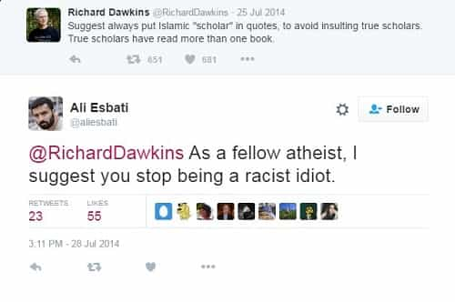
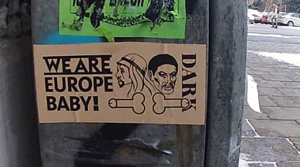

< < < Back
Should Racist Words And Drawings Be Forbidden To Not Offend Muslims In Europe? – Return Of Kings
A drawing (seen above) by the Norwegian artist Thomas Knarvik, with Swedish politician Ali Esbati depicted as an ape, has sparked controversy in Norway. The satiric drawing shows Esbati’s head on an ape body saying “You are racist” over and over again, with the title “the King of Apes” above.
Thomas Knarvik posted a series of similar caricatures on Facebook, and got his profile pulled down after people made reports. Now Norwegians are debating the limits of freedom of speech.
Ali Esbati, born in Iran and now a parliament member for the Swedish Left Party, calls the caricature of him racist. He’s made several appearences in Norwegian media after he was a witness to the terror attack on Utøya in 2011, where Anders Behring Breivik killed 69 people.
“It’s very hard to discuss racism on a systemic level in Norway and it has only gotten worse,” the left-wing politician says. “Today it’s almost regarded as an extreme position to stand for anti-racism.”
The artist himself denies that his drawing is racist and says that it should be interpreted in its proper context. To understand it, you should know that Ali Esbati is one of those typical leftists who’s made a career of calling everything and everyone racist.
You can see how the monkey has been portrayed in earlier satires, and in Aesop’s fable. The monkey is smart, while the cat is spontaneous and impatient. Ali Esbati knows what he’s doing when he accuses everyone of being racist. It’s actually well done to accuse such a leftist media company as NRK [Norwegian Broadcasting Corporation] for being racist. He’s like a parrot who repeats the same things all the time, as I have tried to convey through the drawing.

The parrot strikes again.
Thomas Knarvik says that he’s for “full freedom of speech.” He supports Pamela Geller’s call for a special day when people draw Muhammad, which he calls “provocation for the sake of provocation.”
Norwegian socialist politician Snorre Valen has written an article where he urges Knarvik and those who have defended him to apologize to Esbati. Valen writes: “The drawings follow a tradition of portraying non-whites as subhuman and wild animals, monkeys who can not control their sexuality and bodily functions.”
Politically incorrect art is outlawed
So Knarvik got banned from Facebook for sharing his art with the world. But far more severe punishments can be dealt to those who are politically incorrect in Scandinavia. Norway, Sweden, Denmark and Finland all have laws against hate crimes. The Swedish law states that “expressing contempt” for certain groups can get you in jail for up to four years.
Swedish artist Dan Park has been convicted several times for his “hateful” art. His work is provocative to say the least. In 1998 he was convicted for wearing a jacket with a swastika on it. In 2012 he was convicted again for putting up posters with the words “Our negro slave has escaped.” In 2014 he was sentenced to five months in prison for a set of artworks, one of them with the text “Anxious negroes go crazy.”
On Park’s blog you can see that he continues to put up his art on the streets, despite the establishment doing everything it can to shut him down. His resistance and perseverance is admirable, and I think many more should follow his example.

It shouldn’t come as a surprise that I’m against laws that put limits on your ability to express yourself and what opinions you’re allowed to utter. It seems obvious to me that the only ones that are against freedom of speech today, is those who are afraid that the truth will come out.
With growing awareness of my own country’s injust laws, and seeing how conservatives are being shut down and silenced in other countries, I’m beginning to think that what’s called “hate speech” should not only be legal, but that we have a duty to express it for the sake of it being expressed. Or as Thomas Knarvik might have put it, we should provoke for the sake of provoking.
I normally never use the word negro and I fully understand anyone thinking that it’s an offensive word. But when dirty words are prohibited, something has gone wrong and one has to take a stand against it. One way to do that is by merely using those words and refusing to comply when people tell you to shut up. That’s called exercising your freedom of speech, and doing it becomes even more important when that freedom is being curtailed.
Thomas Knarvik, Dan Park—and Roosh as well—are three men who have paid dearly for speaking their minds and making art. Because of their actions, we know where the limits are. I hope more people follow their example, and make art that is intentionally provocative and offensive. It will come at a price, but it cant be worse than what will happen if we lose our freedom entirely.
In a society where offensiveness is illegal, being offensive is imperative.
Read More: Horrible Beast: 13 Drawings That Depict The Shameful Fatties Of America